Magneto-hydrodynamics module. More...
Functions/Subroutines | |
| subroutine, public | twofl_phys_init () |
| subroutine, public | twofl_to_conserved (ixil, ixol, w, x) |
| Transform primitive variables into conservative ones. | |
| subroutine, public | twofl_to_primitive (ixil, ixol, w, x) |
| Transform conservative variables into primitive ones. | |
| subroutine, public | twofl_get_csound2_c_from_conserved (w, x, ixil, ixol, csound2) |
| subroutine, public | get_rhon_tot (w, x, ixil, ixol, rhon) |
| subroutine, public | twofl_get_pthermal_n (w, x, ixil, ixol, pth) |
| subroutine, public | twofl_get_v_n_idim (w, x, ixil, ixol, idim, v) |
| Calculate v component. | |
| subroutine, public | get_rhoc_tot (w, x, ixil, ixol, rhoc) |
| subroutine, public | twofl_get_pthermal_c (w, x, ixil, ixol, pth) |
| subroutine, public | twofl_get_v_c_idim (w, x, ixil, ixol, idim, v) |
| Calculate v_c component. | |
| subroutine, public | get_normalized_divb (w, ixil, ixol, divb) |
| get dimensionless div B = |divB| * volume / area / |B| | |
| subroutine, public | get_current (w, ixil, ixol, idirmin, current) |
| Calculate idirmin and the idirmin:3 components of the common current array make sure that dxlevel(^D) is set correctly. | |
| subroutine, public | twofl_clean_divb_multigrid (qdt, qt, active) |
| subroutine, public | twofl_face_to_center (ixol, s) |
| calculate cell-center values from face-center values | |
| subroutine, public | b_from_vector_potential (ixisl, ixil, ixol, ws, x) |
| calculate magnetic field from vector potential | |
| subroutine, public | get_gamma_ion_rec (ixil, ixol, w, x, gamma_rec, gamma_ion) |
| subroutine, public | get_alpha_coll (ixil, ixol, w, x, alpha) |
Variables | |
| integer, parameter, public | eq_energy_tot =2 |
| integer, parameter, public | eq_energy_int =1 |
| integer, parameter, public | eq_energy_none =0 |
| integer, parameter, public | eq_energy_ki =3 |
| integer, public, protected | twofl_eq_energy = EQ_ENERGY_TOT |
| logical, public, protected | twofl_hyperdiffusivity = .false. |
| Whether hyperdiffusivity is used. | |
| logical, public, protected | twofl_dump_hyperdiffusivity_coef = .false. |
| double precision, dimension(:), allocatable, public, protected | c_shk |
| double precision, dimension(:), allocatable, public, protected | c_hyp |
| logical, public, protected | twofl_thermal_conduction_c = .false. |
| Whether thermal conduction is used. | |
| logical, public, protected | twofl_radiative_cooling_c = .false. |
| Whether radiative cooling is added. | |
| type(rc_fluid), allocatable, public | rc_fl_c |
| logical, public, protected | twofl_viscosity = .false. |
| Whether viscosity is added. | |
| logical, public, protected | twofl_gravity = .false. |
| Whether gravity is added: common flag for charges and neutrals. | |
| logical, public, protected | twofl_dump_full_vars = .false. |
| whether dump full variables (when splitting is used) in a separate dat file | |
| logical, public, protected | twofl_hall = .false. |
| Whether Hall-MHD is used. | |
| type(tc_fluid), allocatable, public | tc_fl_c |
| type(te_fluid), allocatable, public | te_fl_c |
| logical, public, protected | twofl_thermal_conduction_n = .false. |
| logical, public, protected | twofl_radiative_cooling_n = .false. |
| logical, public, protected | twofl_trac = .false. |
| Whether TRAC method is used. | |
| logical, public, protected | twofl_glm = .false. |
| Whether GLM-MHD is used. | |
| integer, public, protected | twofl_trac_type =1 |
| Which TRAC method is used. | |
| double precision, public, protected | twofl_trac_mask = 0.d0 |
| Height of the mask used in the TRAC method. | |
| logical, public, protected | source_split_divb = .false. |
| Whether divB cleaning sources are added splitting from fluid solver. | |
| double precision, public | twofl_glm_alpha = 0.5d0 |
| GLM-MHD parameter: ratio of the diffusive and advective time scales for div b taking values within [0, 1]. | |
| integer, public | rho_c_ |
| Index of the density (in the w array). | |
| integer, dimension(:), allocatable, public | mom_c |
| Indices of the momentum density. | |
| integer, public, protected | c |
| Indices of the momentum density for the form of better vectorization. | |
| integer, public, protected | m |
| integer, public, protected | c_ |
| integer, public | e_c_ =-1 |
| Index of the energy density (-1 if not present). | |
| integer, public, protected | b |
| integer, public | tcoff_c_ |
| Index of the cutoff temperature for the TRAC method. | |
| integer, public | tweight_c_ |
| integer, public, protected | psi_ |
| Indices of the GLM psi. | |
| logical, public | has_equi_rho_c0 = .false. |
| equi vars flags | |
| logical, public | has_equi_pe_c0 = .false. |
| integer, public | equi_rho_c0_ = -1 |
| equi vars indices in the stateequi_vars array | |
| integer, public | equi_pe_c0_ = -1 |
| logical, public | twofl_equi_thermal_c = .false. |
| logical, public | twofl_equi_thermal = .false. |
| integer, public | rho_n_ |
| integer, dimension(:), allocatable, public | mom_n |
| integer, public | e_n_ |
| integer, public | tcoff_n_ |
| integer, public | tweight_n_ |
| logical, public | has_equi_rho_n0 = .false. |
| logical, public | has_equi_pe_n0 = .false. |
| integer, public | equi_rho_n0_ = -1 |
| integer, public | equi_pe_n0_ = -1 |
| double precision, public | twofl_alpha_coll = 0d0 |
| collisional alpha | |
| logical, public | twofl_alpha_coll_constant = .true. |
| logical, public | twofl_coll_inc_te = .true. |
| whether include thermal exchange collisional terms | |
| logical, public | twofl_coll_inc_ionrec = .false. |
| whether include ionization/recombination inelastic collisional terms | |
| logical, public | twofl_equi_thermal_n = .false. |
| double precision, public | dtcollpar = -1d0 |
| logical, public, protected | twofl_dump_coll_terms = .false. |
| whether dump collisional terms in a separte dat file | |
| double precision, public, protected | he_abundance = 0d0 |
| double precision, public, protected | rc = 2d0 |
| double precision, public, protected | rn = 1d0 |
| double precision, public | twofl_gamma = 5.d0/3.0d0 |
| The adiabatic index. | |
| double precision, public | twofl_adiab = 1.0d0 |
| The adiabatic constant. | |
| double precision, public | twofl_eta = 0.0d0 |
| The MHD resistivity. | |
| double precision, public | twofl_eta_hyper = 0.0d0 |
| The MHD hyper-resistivity. | |
| double precision, public | twofl_etah = 0.0d0 |
| The MHD Hall coefficient. | |
| character(len=std_len), public, protected | typedivbfix = 'linde' |
| Method type to clean divergence of B. | |
| character(len=std_len), public, protected | type_ct = 'uct_contact' |
| Method type of constrained transport. | |
| integer, public, protected | twofl_divb_nth = 1 |
| Whether divB is computed with a fourth order approximation. | |
| logical, public | clean_initial_divb = .false. |
| clean initial divB | |
| logical, public | divbwave = .true. |
| Add divB wave in Roe solver. | |
| logical, dimension(2 *^nd), public, protected | boundary_divbfix =.true. |
| To control divB=0 fix for boundary. | |
| integer, dimension(2 *^nd), public, protected | boundary_divbfix_skip =0 |
| To skip * layer of ghost cells during divB=0 fix for boundary. | |
| logical, public, protected | b0field_forcefree =.true. |
| B0 field is force-free. | |
| procedure(mask_subroutine), pointer, public | usr_mask_alpha => null() |
| procedure(mask_subroutine2), pointer, public | usr_mask_gamma_ion_rec => null() |
Detailed Description
Magneto-hydrodynamics module.
Function/Subroutine Documentation
◆ b_from_vector_potential()
| subroutine, public mod_twofl_phys::b_from_vector_potential | ( | integer, intent(in) | ixis, |
| integer, intent(in) | l, | ||
| integer, intent(in) | ixi, | ||
| l, | |||
| integer, intent(in) | ixo, | ||
| l, | |||
| double precision, dimension(ixis^s,1:nws), intent(inout) | ws, | ||
| double precision, dimension(ixi^s,1:ndim), intent(in) | x ) |
calculate magnetic field from vector potential
Definition at line 6150 of file mod_twofl_phys.t.
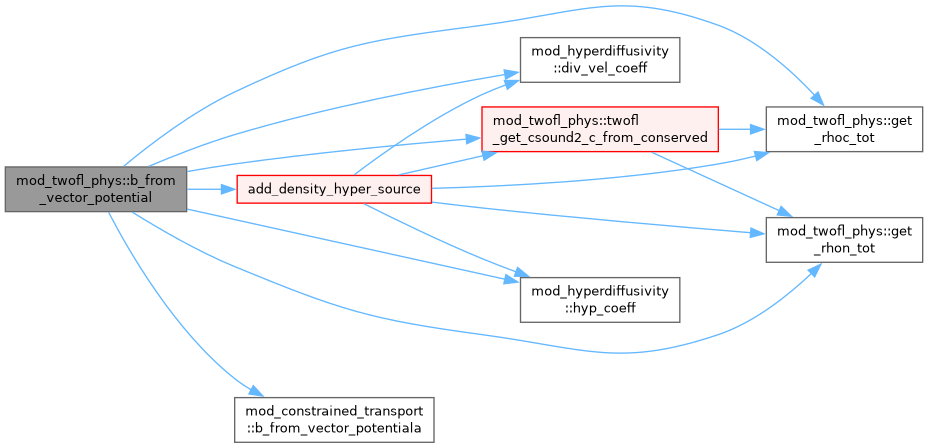
◆ get_alpha_coll()
| subroutine, public mod_twofl_phys::get_alpha_coll | ( | integer, intent(in) | ixi, |
| integer, intent(in) | l, | ||
| integer, intent(in) | ixo, | ||
| l, | |||
| double precision, dimension(ixi^s,1:nw), intent(in) | w, | ||
| double precision, dimension(ixi^s,1:ndim), intent(in) | x, | ||
| double precision, dimension(ixi^s), intent(out) | alpha ) |
Definition at line 6643 of file mod_twofl_phys.t.
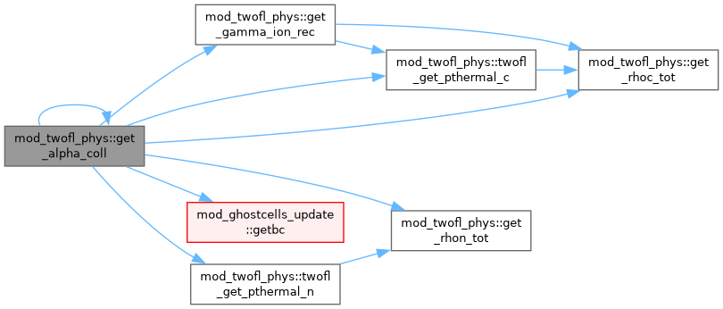
◆ get_current()
| subroutine, public mod_twofl_phys::get_current | ( | double precision, dimension(ixi^s,1:nw), intent(in) | w, |
| integer, intent(in) | ixi, | ||
| integer, intent(in) | l, | ||
| integer, intent(in) | ixo, | ||
| l, | |||
| integer, intent(out) | idirmin, | ||
| double precision, dimension(ixi^s,7-2*ndir:3) | current ) |
Calculate idirmin and the idirmin:3 components of the common current array make sure that dxlevel(^D) is set correctly.
Definition at line 4370 of file mod_twofl_phys.t.
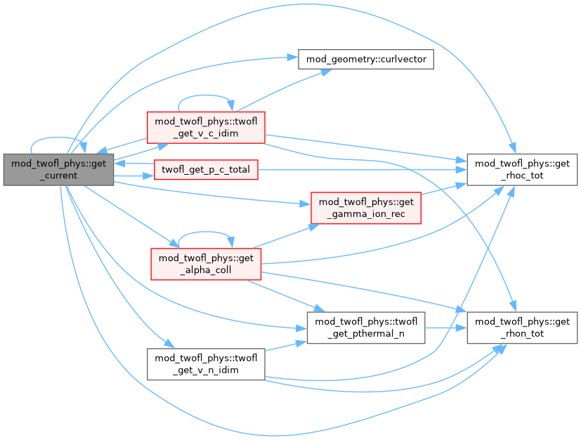
◆ get_gamma_ion_rec()
| subroutine, public mod_twofl_phys::get_gamma_ion_rec | ( | integer, intent(in) | ixi, |
| integer, intent(in) | l, | ||
| integer, intent(in) | ixo, | ||
| l, | |||
| double precision, dimension(ixi^s,1:nw), intent(in) | w, | ||
| double precision, dimension(ixi^s,1:ndim), intent(in) | x, | ||
| double precision, dimension(ixi^s), intent(out) | gamma_rec, | ||
| double precision, dimension(ixi^s), intent(out) | gamma_ion ) |
Definition at line 6604 of file mod_twofl_phys.t.
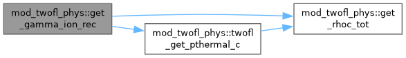
◆ get_normalized_divb()
| subroutine, public mod_twofl_phys::get_normalized_divb | ( | double precision, dimension(ixi^s,1:nw), intent(in) | w, |
| integer, intent(in) | ixi, | ||
| integer, intent(in) | l, | ||
| integer, intent(in) | ixo, | ||
| l, | |||
| double precision, dimension(ixi^s) | divb ) |
get dimensionless div B = |divB| * volume / area / |B|
Definition at line 4336 of file mod_twofl_phys.t.
◆ get_rhoc_tot()
| subroutine, public mod_twofl_phys::get_rhoc_tot | ( | double precision, dimension(ixi^s,1:nw), intent(in) | w, |
| double precision, dimension(ixi^s,1:ndim), intent(in) | x, | ||
| integer, intent(in) | ixi, | ||
| integer, intent(in) | l, | ||
| integer, intent(in) | ixo, | ||
| l, | |||
| double precision, dimension(ixi^s), intent(out) | rhoc ) |
Definition at line 3664 of file mod_twofl_phys.t.
◆ get_rhon_tot()
| subroutine, public mod_twofl_phys::get_rhon_tot | ( | double precision, dimension(ixi^s,1:nw), intent(in) | w, |
| double precision, dimension(ixi^s,1:ndim), intent(in) | x, | ||
| integer, intent(in) | ixi, | ||
| integer, intent(in) | l, | ||
| integer, intent(in) | ixo, | ||
| l, | |||
| double precision, dimension(ixi^s), intent(out) | rhon ) |
Definition at line 3530 of file mod_twofl_phys.t.
◆ twofl_clean_divb_multigrid()
| subroutine, public mod_twofl_phys::twofl_clean_divb_multigrid | ( | double precision, intent(in) | qdt, |
| double precision, intent(in) | qt, | ||
| logical, intent(inout) | active ) |
- Parameters
-
[in] qdt Current time step [in] qt Current time [in,out] active Output if the source is active
Definition at line 5427 of file mod_twofl_phys.t.
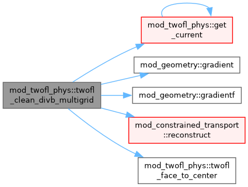
◆ twofl_face_to_center()
| subroutine, public mod_twofl_phys::twofl_face_to_center | ( | integer, intent(in) | ixo, |
| integer, intent(in) | l, | ||
| type(state) | s ) |
calculate cell-center values from face-center values
Definition at line 6090 of file mod_twofl_phys.t.
◆ twofl_get_csound2_c_from_conserved()
| subroutine, public mod_twofl_phys::twofl_get_csound2_c_from_conserved | ( | double precision, dimension(ixi^s,nw), intent(in) | w, |
| double precision, dimension(ixi^s,1:ndim), intent(in) | x, | ||
| integer, intent(in) | ixi, | ||
| integer, intent(in) | l, | ||
| integer, intent(in) | ixo, | ||
| l, | |||
| double precision, dimension(ixi^s), intent(out) | csound2 ) |
Definition at line 3076 of file mod_twofl_phys.t.
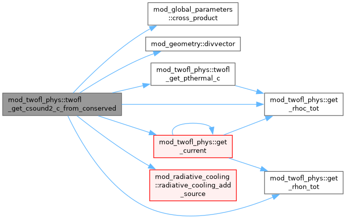
◆ twofl_get_pthermal_c()
◆ twofl_get_pthermal_n()
◆ twofl_get_v_c_idim()
| subroutine, public mod_twofl_phys::twofl_get_v_c_idim | ( | double precision, dimension(ixi^s,nw), intent(in) | w, |
| double precision, dimension(ixi^s,1:ndim), intent(in) | x, | ||
| integer, intent(in) | ixi, | ||
| integer, intent(in) | l, | ||
| integer, intent(in) | ixo, | ||
| l, | |||
| integer, intent(in) | idim, | ||
| double precision, dimension(ixi^s), intent(out) | v ) |
Calculate v_c component.
Definition at line 3752 of file mod_twofl_phys.t.
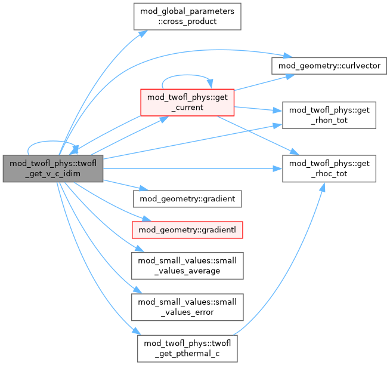
◆ twofl_get_v_n_idim()
| subroutine, public mod_twofl_phys::twofl_get_v_n_idim | ( | double precision, dimension(ixi^s,nw), intent(in) | w, |
| double precision, dimension(ixi^s,1:ndim), intent(in) | x, | ||
| integer, intent(in) | ixi, | ||
| integer, intent(in) | l, | ||
| integer, intent(in) | ixo, | ||
| l, | |||
| integer, intent(in) | idim, | ||
| double precision, dimension(ixi^s), intent(out) | v ) |
Calculate v component.
Definition at line 3615 of file mod_twofl_phys.t.
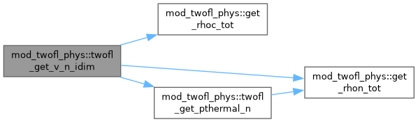
◆ twofl_phys_init()
| subroutine, public mod_twofl_phys::twofl_phys_init |
Solve total energy equation or not
Solve internal energy instead of total energy
Definition at line 352 of file mod_twofl_phys.t.
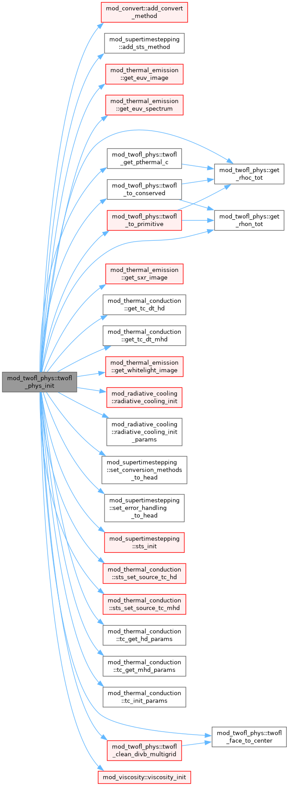
◆ twofl_to_conserved()
| subroutine, public mod_twofl_phys::twofl_to_conserved | ( | integer, intent(in) | ixi, |
| integer, intent(in) | l, | ||
| integer, intent(in) | ixo, | ||
| l, | |||
| double precision, dimension(ixi^s, nw), intent(inout) | w, | ||
| double precision, dimension(ixi^s, 1:ndim), intent(in) | x ) |
Transform primitive variables into conservative ones.
Definition at line 1512 of file mod_twofl_phys.t.
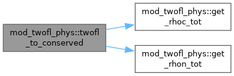
◆ twofl_to_primitive()
| subroutine, public mod_twofl_phys::twofl_to_primitive | ( | integer, intent(in) | ixi, |
| integer, intent(in) | l, | ||
| integer, intent(in) | ixo, | ||
| l, | |||
| double precision, dimension(ixi^s, nw), intent(inout) | w, | ||
| double precision, dimension(ixi^s, 1:ndim), intent(in) | x ) |
Transform conservative variables into primitive ones.
Definition at line 1556 of file mod_twofl_phys.t.
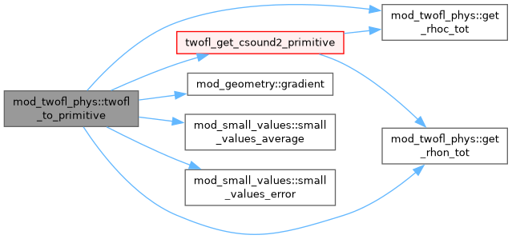
Variable Documentation
◆ b
| integer, public, protected mod_twofl_phys::b |
Definition at line 98 of file mod_twofl_phys.t.
◆ b0field_forcefree
| logical, public, protected mod_twofl_phys::b0field_forcefree =.true. |
B0 field is force-free.
Definition at line 195 of file mod_twofl_phys.t.
◆ boundary_divbfix
| logical, dimension(2*^nd), public, protected mod_twofl_phys::boundary_divbfix =.true. |
To control divB=0 fix for boundary.
Definition at line 189 of file mod_twofl_phys.t.
◆ boundary_divbfix_skip
| integer, dimension(2*^nd), public, protected mod_twofl_phys::boundary_divbfix_skip =0 |
To skip * layer of ghost cells during divB=0 fix for boundary.
Definition at line 192 of file mod_twofl_phys.t.
◆ c
| integer public protected mod_twofl_phys::c |
Indices of the momentum density for the form of better vectorization.
Indices of the magnetic field for the form of better vectorization.
Definition at line 93 of file mod_twofl_phys.t.
◆ c_
| integer public protected mod_twofl_phys::c_ |
Definition at line 93 of file mod_twofl_phys.t.
◆ c_hyp
| double precision, dimension(:), allocatable, public, protected mod_twofl_phys::c_hyp |
Definition at line 35 of file mod_twofl_phys.t.
◆ c_shk
| double precision, dimension(:), allocatable, public, protected mod_twofl_phys::c_shk |
Definition at line 34 of file mod_twofl_phys.t.
◆ clean_initial_divb
| logical, public mod_twofl_phys::clean_initial_divb = .false. |
clean initial divB
Definition at line 183 of file mod_twofl_phys.t.
◆ divbwave
| logical, public mod_twofl_phys::divbwave = .true. |
Add divB wave in Roe solver.
Definition at line 186 of file mod_twofl_phys.t.
◆ dtcollpar
| double precision, public mod_twofl_phys::dtcollpar = -1d0 |
Definition at line 138 of file mod_twofl_phys.t.
◆ e_c_
| integer, public mod_twofl_phys::e_c_ =-1 |
Index of the energy density (-1 if not present).
Definition at line 96 of file mod_twofl_phys.t.
◆ e_n_
| integer, public mod_twofl_phys::e_n_ |
Definition at line 121 of file mod_twofl_phys.t.
◆ eq_energy_int
| integer, parameter, public mod_twofl_phys::eq_energy_int =1 |
Definition at line 21 of file mod_twofl_phys.t.
◆ eq_energy_ki
| integer, parameter, public mod_twofl_phys::eq_energy_ki =3 |
Definition at line 27 of file mod_twofl_phys.t.
◆ eq_energy_none
| integer, parameter, public mod_twofl_phys::eq_energy_none =0 |
Definition at line 24 of file mod_twofl_phys.t.
◆ eq_energy_tot
| integer, parameter, public mod_twofl_phys::eq_energy_tot =2 |
Definition at line 18 of file mod_twofl_phys.t.
◆ equi_pe_c0_
| integer, public mod_twofl_phys::equi_pe_c0_ = -1 |
Definition at line 113 of file mod_twofl_phys.t.
◆ equi_pe_n0_
| integer, public mod_twofl_phys::equi_pe_n0_ = -1 |
Definition at line 127 of file mod_twofl_phys.t.
◆ equi_rho_c0_
| integer, public mod_twofl_phys::equi_rho_c0_ = -1 |
equi vars indices in the stateequi_vars array
Definition at line 112 of file mod_twofl_phys.t.
◆ equi_rho_n0_
| integer, public mod_twofl_phys::equi_rho_n0_ = -1 |
Definition at line 126 of file mod_twofl_phys.t.
◆ has_equi_pe_c0
| logical, public mod_twofl_phys::has_equi_pe_c0 = .false. |
Definition at line 109 of file mod_twofl_phys.t.
◆ has_equi_pe_n0
| logical, public mod_twofl_phys::has_equi_pe_n0 = .false. |
Definition at line 125 of file mod_twofl_phys.t.
◆ has_equi_rho_c0
| logical, public mod_twofl_phys::has_equi_rho_c0 = .false. |
equi vars flags
Definition at line 108 of file mod_twofl_phys.t.
◆ has_equi_rho_n0
| logical, public mod_twofl_phys::has_equi_rho_n0 = .false. |
Definition at line 124 of file mod_twofl_phys.t.
◆ he_abundance
| double precision, public, protected mod_twofl_phys::he_abundance = 0d0 |
Definition at line 144 of file mod_twofl_phys.t.
◆ m
| integer, public, protected mod_twofl_phys::m |
Definition at line 93 of file mod_twofl_phys.t.
◆ mom_c
| integer, dimension(:), allocatable, public mod_twofl_phys::mom_c |
Indices of the momentum density.
Definition at line 91 of file mod_twofl_phys.t.
◆ mom_n
| integer, dimension(:), allocatable, public mod_twofl_phys::mom_n |
Definition at line 120 of file mod_twofl_phys.t.
◆ psi_
| integer, public, protected mod_twofl_phys::psi_ |
Indices of the GLM psi.
Definition at line 105 of file mod_twofl_phys.t.
◆ rc
| double precision, public, protected mod_twofl_phys::rc = 2d0 |
Definition at line 146 of file mod_twofl_phys.t.
◆ rc_fl_c
| type(rc_fluid), allocatable, public mod_twofl_phys::rc_fl_c |
Definition at line 46 of file mod_twofl_phys.t.
◆ rho_c_
| integer, public mod_twofl_phys::rho_c_ |
Index of the density (in the w array).
Definition at line 88 of file mod_twofl_phys.t.
◆ rho_n_
| integer, public mod_twofl_phys::rho_n_ |
Definition at line 119 of file mod_twofl_phys.t.
◆ rn
| double precision, public, protected mod_twofl_phys::rn = 1d0 |
Definition at line 147 of file mod_twofl_phys.t.
◆ source_split_divb
| logical, public, protected mod_twofl_phys::source_split_divb = .false. |
Whether divB cleaning sources are added splitting from fluid solver.
Definition at line 81 of file mod_twofl_phys.t.
◆ tc_fl_c
| type(tc_fluid), allocatable, public mod_twofl_phys::tc_fl_c |
Definition at line 60 of file mod_twofl_phys.t.
◆ tcoff_c_
| integer, public mod_twofl_phys::tcoff_c_ |
Index of the cutoff temperature for the TRAC method.
Definition at line 101 of file mod_twofl_phys.t.
◆ tcoff_n_
| integer, public mod_twofl_phys::tcoff_n_ |
Definition at line 122 of file mod_twofl_phys.t.
◆ te_fl_c
| type(te_fluid), allocatable, public mod_twofl_phys::te_fl_c |
Definition at line 61 of file mod_twofl_phys.t.
◆ tweight_c_
| integer, public mod_twofl_phys::tweight_c_ |
Definition at line 102 of file mod_twofl_phys.t.
◆ tweight_n_
| integer, public mod_twofl_phys::tweight_n_ |
Definition at line 123 of file mod_twofl_phys.t.
◆ twofl_adiab
| double precision, public mod_twofl_phys::twofl_adiab = 1.0d0 |
The adiabatic constant.
Definition at line 153 of file mod_twofl_phys.t.
◆ twofl_alpha_coll
| double precision, public mod_twofl_phys::twofl_alpha_coll = 0d0 |
collisional alpha
Definition at line 131 of file mod_twofl_phys.t.
◆ twofl_alpha_coll_constant
| logical, public mod_twofl_phys::twofl_alpha_coll_constant = .true. |
Definition at line 132 of file mod_twofl_phys.t.
◆ twofl_coll_inc_ionrec
| logical, public mod_twofl_phys::twofl_coll_inc_ionrec = .false. |
whether include ionization/recombination inelastic collisional terms
Definition at line 136 of file mod_twofl_phys.t.
◆ twofl_coll_inc_te
| logical, public mod_twofl_phys::twofl_coll_inc_te = .true. |
whether include thermal exchange collisional terms
Definition at line 134 of file mod_twofl_phys.t.
◆ twofl_divb_nth
| integer, public, protected mod_twofl_phys::twofl_divb_nth = 1 |
Whether divB is computed with a fourth order approximation.
Definition at line 171 of file mod_twofl_phys.t.
◆ twofl_dump_coll_terms
| logical, public, protected mod_twofl_phys::twofl_dump_coll_terms = .false. |
whether dump collisional terms in a separte dat file
Definition at line 140 of file mod_twofl_phys.t.
◆ twofl_dump_full_vars
| logical, public, protected mod_twofl_phys::twofl_dump_full_vars = .false. |
whether dump full variables (when splitting is used) in a separate dat file
Definition at line 55 of file mod_twofl_phys.t.
◆ twofl_dump_hyperdiffusivity_coef
| logical, public, protected mod_twofl_phys::twofl_dump_hyperdiffusivity_coef = .false. |
Definition at line 33 of file mod_twofl_phys.t.
◆ twofl_eq_energy
| integer, public, protected mod_twofl_phys::twofl_eq_energy = EQ_ENERGY_TOT |
Definition at line 29 of file mod_twofl_phys.t.
◆ twofl_equi_thermal
| logical, public mod_twofl_phys::twofl_equi_thermal = .false. |
Definition at line 116 of file mod_twofl_phys.t.
◆ twofl_equi_thermal_c
| logical, public mod_twofl_phys::twofl_equi_thermal_c = .false. |
Definition at line 114 of file mod_twofl_phys.t.
◆ twofl_equi_thermal_n
| logical, public mod_twofl_phys::twofl_equi_thermal_n = .false. |
Definition at line 137 of file mod_twofl_phys.t.
◆ twofl_eta
| double precision, public mod_twofl_phys::twofl_eta = 0.0d0 |
The MHD resistivity.
Definition at line 156 of file mod_twofl_phys.t.
◆ twofl_eta_hyper
| double precision, public mod_twofl_phys::twofl_eta_hyper = 0.0d0 |
The MHD hyper-resistivity.
Definition at line 159 of file mod_twofl_phys.t.
◆ twofl_etah
| double precision, public mod_twofl_phys::twofl_etah = 0.0d0 |
The MHD Hall coefficient.
Definition at line 162 of file mod_twofl_phys.t.
◆ twofl_gamma
| double precision, public mod_twofl_phys::twofl_gamma = 5.d0/3.0d0 |
The adiabatic index.
Definition at line 150 of file mod_twofl_phys.t.
◆ twofl_glm
| logical, public, protected mod_twofl_phys::twofl_glm = .false. |
Whether GLM-MHD is used.
Definition at line 72 of file mod_twofl_phys.t.
◆ twofl_glm_alpha
| double precision, public mod_twofl_phys::twofl_glm_alpha = 0.5d0 |
GLM-MHD parameter: ratio of the diffusive and advective time scales for div b taking values within [0, 1].
Definition at line 85 of file mod_twofl_phys.t.
◆ twofl_gravity
| logical, public, protected mod_twofl_phys::twofl_gravity = .false. |
Whether gravity is added: common flag for charges and neutrals.
Definition at line 52 of file mod_twofl_phys.t.
◆ twofl_hall
| logical, public, protected mod_twofl_phys::twofl_hall = .false. |
Whether Hall-MHD is used.
Definition at line 58 of file mod_twofl_phys.t.
◆ twofl_hyperdiffusivity
| logical, public, protected mod_twofl_phys::twofl_hyperdiffusivity = .false. |
Whether hyperdiffusivity is used.
Definition at line 32 of file mod_twofl_phys.t.
◆ twofl_radiative_cooling_c
| logical, public, protected mod_twofl_phys::twofl_radiative_cooling_c = .false. |
Whether radiative cooling is added.
Definition at line 45 of file mod_twofl_phys.t.
◆ twofl_radiative_cooling_n
| logical, public, protected mod_twofl_phys::twofl_radiative_cooling_n = .false. |
Definition at line 65 of file mod_twofl_phys.t.
◆ twofl_thermal_conduction_c
| logical, public, protected mod_twofl_phys::twofl_thermal_conduction_c = .false. |
Whether thermal conduction is used.
Definition at line 38 of file mod_twofl_phys.t.
◆ twofl_thermal_conduction_n
| logical, public, protected mod_twofl_phys::twofl_thermal_conduction_n = .false. |
Definition at line 64 of file mod_twofl_phys.t.
◆ twofl_trac
| logical, public, protected mod_twofl_phys::twofl_trac = .false. |
Whether TRAC method is used.
Definition at line 69 of file mod_twofl_phys.t.
◆ twofl_trac_mask
| double precision, public, protected mod_twofl_phys::twofl_trac_mask = 0.d0 |
Height of the mask used in the TRAC method.
Definition at line 78 of file mod_twofl_phys.t.
◆ twofl_trac_type
| integer, public, protected mod_twofl_phys::twofl_trac_type =1 |
Which TRAC method is used.
Definition at line 75 of file mod_twofl_phys.t.
◆ twofl_viscosity
| logical, public, protected mod_twofl_phys::twofl_viscosity = .false. |
Whether viscosity is added.
Definition at line 49 of file mod_twofl_phys.t.
◆ type_ct
| character(len=std_len), public, protected mod_twofl_phys::type_ct = 'uct_contact' |
Method type of constrained transport.
Definition at line 168 of file mod_twofl_phys.t.
◆ typedivbfix
| character(len=std_len), public, protected mod_twofl_phys::typedivbfix = 'linde' |
Method type to clean divergence of B.
Definition at line 165 of file mod_twofl_phys.t.
◆ usr_mask_alpha
| procedure(mask_subroutine), pointer, public mod_twofl_phys::usr_mask_alpha => null() |
Definition at line 274 of file mod_twofl_phys.t.
◆ usr_mask_gamma_ion_rec
| procedure(mask_subroutine2), pointer, public mod_twofl_phys::usr_mask_gamma_ion_rec => null() |
Definition at line 275 of file mod_twofl_phys.t.
Generated by